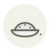

Masago (œufs de capelan)
Masago
| Nom latin | Mallotus villosus (roe) |
|---|---|
| Famille | Œufs de poisson & caviar |
| Origine | Islande et Terre-Neuve |
| Saison | Toute l’année |
| Goût | Salin · Salé · Amer · Iodé |
| Prix courant | 30–60 €/kg |
Ce que c’est
Le masago est l'œuvre du capelan, petit poisson fourrage arctique pêché par millions au large de l'Islande et de Terre-Neuve — celui-là même qui nourrit la morue au-dessus de lui. On le colore couramment pour le vendre comme tobiko, alors que ses grains sont plus petits, plus mous, légèrement amers, et qu'ils réagissent tout autrement dès qu'ils rencontrent une sauce.
En cuisine
Comme les grains éclatent, employez-le mélangé à une mayonnaise ou à une sauce relevée, là où le tobiko serait gâché. Gardez le tobiko pour le dessus du maki et le masago pour l'intérieur.
S’accorde avec
Riz Nori Concombre Avocat Sésame Sauce soja Cébette
Une erreur ici, ou un oubli ? Dites-le nous